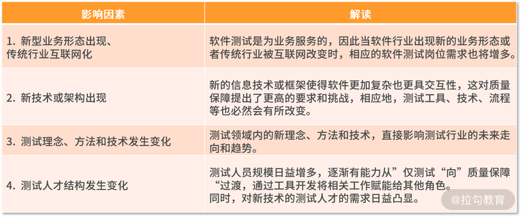
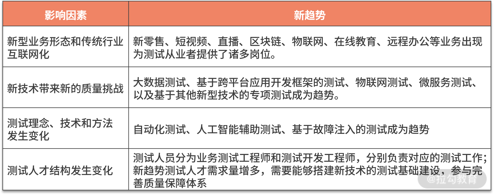

- 00 开篇词 既往不恋，当下不杂，未来不迎.md.html
- 01 微服务架构有哪些特点？.md.html
- 02 微服务架构下的质量挑战.md.html
- 03 微服务架构下的测试策略.md.html
- 04 单元测试：怎样提升最小可测试单元的质量？.md.html
- 05 集成测试：如何进行微服务的集成测试？.md.html
- 06 组件测试：如何保证单服务的质量？.md.html
- 07 契约测试：如何进行消费者驱动的契约测试？.md.html
- 08 端到端测试：站在用户视角验证整个系统.md.html
- 09 微服务架构下的质量保障体系全景概览.md.html
- 10 流程规范篇：高速迭代的研发过程需要怎样的规范？.md.html
- 11 测试技术篇：测试技术这么多，我该如何选型？.md.html
- 12 测试技术篇：如何提升测试效率？.md.html
- 13 测试技术篇：专项测试技术解决了哪些专项问题？.md.html
- 14 CICD 篇：如何更好地利用多个“测试”环境？.md.html
- 15 CICD 篇：如何构建持续交付工具链？.md.html
- 16 度量与运营篇：如何做好质量和效率的度量与运营？.md.html
- 17 度量与运营篇：如何度量与运营效率和价值？.md.html
- 18 组织保障篇：质量是设计出来的.md.html
- 19 软件测试新趋势探讨.md.html
- 20 结束语 QA 如何打造自身的核心竞争力？.md.html
19 软件测试新趋势探讨
现如今，新业务形态和新技术层出不穷，它们将从方方面面影响到软件测试的趋势。今天我们就探讨下软件测试的新趋势，以及基于这些发展趋势，软件测试人员应如何打造自身的核心竞争力，提前布局和播种，为以后的职业发展添砖加瓦。
软件测试趋势受哪些因素影响？
在众多影响软件测试的因素中，如下几个因素比较关键。

从上表中也可以看到，前两个属于大环境带来的外部因素，后两个是测试领域的内部因素。本课时将通过以上几个方面来探讨下软件测试的变化和趋势。
1. 新型业务形态和传统行业互联网化
互联网的发展越来越快速，相信你通过自身的生活和工作经历不难发现，近几年不断兴起和蓬勃发展的行业有新零售、短视频、直播、区块链、物联网等，加之 2020 年的新冠疫情，使得在线教育、远程办公等业务出现了新的生机。基于这些业务发展，将会催生出许多软件业务和技术团队，相应的软件测试需求也大大增加。
以软件测试的视角来看，新型 业务有软件通用的部分，也有其业务特有的内容，进而影响测试人员的测试技能。以短视频 App 为例，App 的特性是通用的，而短视频的拍摄和播放则涉及其特有的内容，如特有功能（解码、预加载、清晰度测试等）、客户端性能专项（流量、耗电量、帧率等），这些特有的内容可以沉淀出专项测试能力。
因此，基于新型业务形态和传统行业互联网化的趋势，软件测试领域也将吸引更多的测试人才投入到这些业务领域当中。
2. 新技术带来新的质量挑战
近年来，新的技术和架构层出不穷，包括但不限于大数据技术、跨平台应用开发框架、微服务架构、物联网技术、机器学习、人工智能、区块链、语言识别及辅助等技术。它们使得软件更加复杂也更具交互性，这对质量保障提出了更高的要求和挑战，相应地，测试工具、技术、流程等也必然会有所改变。
（1）大数据测试
近几年有关大数据方面的职位主要聚焦在大数据开发工程师或大数据架构师，大数据的质量保障工作则分为两部分：一部分是大数据基础建设和数据本身的质量，由相应的开发工程师和产品经理自测解决；另一部分是与业务系统有关的部分，由负责业务测试的测试人员通过验证功能主流程或性能测试的方式保障。随着大数据基础建设的日益完善、大数据在企业中的应用范围日益增多和深入化，对大数据质量保障的需求必然成为未来趋势。
大数据测试人员的工作职责主要体现为如下几个方面：
- 对各项业务数据的质量保证，以及各类数据质量测试方法探索和效率提升；
- 根据业务需求产出完备的测试方案和策略，并制定可执行落地的测试计划；
- 全方位保障数据的质量特性，包含但不限于一致性、有效性、准确性、及时性、完整性等；
- 高阶职位还需要能负责大数据测试的人才培养，使团队形成人才梯队。
对于大数据测试人员来说，除了掌握通用的互联网业务的测试技能和工具外，需要掌握 Hadoop、Spark、Hive 等常用大数据技术，并具有一定的数据分析技能和相关经验、仿真测试经验，如果有相关业务的大数据测试经验则更佳。
（2）基于跨平台应用开发框架的测试
我们知道，移动端分为 iOS 和 Android 两个系统，两个系统使用不同的编程语言和技术栈。为了提高研发效率，跨平台应用开发框架（如 RN 和 Flutter）应运而生，有了这项技术，同样一份代码可以同时生成 iOS 和 Android 两个高性能、高保真的应用程序。
研发工程师的资源节省了下来，效率几乎翻倍，但测试人员的测试效率并未提升，反而可能更低了（已有功能接入该框架时，需要拉长周期逐步改造，改造期间，测试人员需要同时兼顾测试两种方案的功能）。因此，如何提升移动端的测试效率，无论是采用 UI 自动化测试方案，还是采用精准测试，或是采用一机多控等其他思路，现阶段都没有比较成熟有效的方案，但提升移动端的测试效率势在必行，是未来的趋势之一。
（3）物联网测试
国内智能手机的渗透率已超过 90%，但网络边缘设备的渗透率还很低，且其数量可能是智能手机数量的数十倍。随着 5G、人工智能技术、大数据技术的发展，物联网的潜力在未来十年将会更加凸显，它将在各行各业中得到应用，如用户端智能硬件、政府部门、制造业，等等。随着越来越多的设备联网，物联网应用测试必然成为未来软件测试趋势之一。
（4）微服务测试
越来越多的应用程序将转向微服务架构，质量保障体系也将发生相应的调整。这也是本专栏存在的价值和意义。
（5）基于其他新型技术的专项测试
除了上述的技术带来的变化外，机器学习、人工智能、区块链、语音识别及辅助等技术的出现与繁荣，使得对这些技术进行专项测试也将是测试领域的一大趋势。
这其中会涉及一些新的挑战：
- 测试人工智能系统可能需要探索新的方法与理论体系、重新构建质量保障体系、评估人工智能系统的“聪明”程度；
- 测试区块链则需要考虑如何在测试环境模拟真实环境的数据量与交易量；
- 测试语音识别及辅助系统时，需要考虑如何在自动化测试框架中兼容语音命令。
综上所述，大数据技术、跨平台应用开发框架、微服务架构、物联网技术、机器学习、人工智能、区块链、语言识别及辅助等技术，改变了业务实现的底层技术，给业务或系统带来了新的质量挑战，这就需要更多的软件测试从业人员投身其中，积极应对和拥抱变化。新的技术在带来新的质量挑战的同时，也给软件测试理念、技术和方法带来了新的思路和积极的影响。
3. 测试理念、技术和方法发生新的变化
（1）自动化测试
在这个快速变化发展的时代，任何一款产品想要在市场具备竞争力，必须能够快速适应和应对变化，要求产品开发过程具备快速持续的高质量交付能力。而要做到快速持续的高质量交付，自动化测试将必不可少。
自动化测试虽然不是新技术，但由于产品形态、技术架构发生了变化，需要基于新的变化调整自动化测试框架和策略。另外，诸如人工智能、机器学习、自然语言处理、图形识别等技术将被广泛地用于测试自动化工具的开发，它们可以帮助完全自主地创建测试、简化页面对象识别等等。
（2）人工智能辅助测试
利用深度机器学习、人工智能技术来辅助测试工作是最近几年最为热门的一个测试趋势，其中包括测试用例、测试数据和测试代码的自动生成、大规模测试结果分析、自动化探索性测试、缺陷定位等。现在已经有不少公司研究出了人工智能辅助测试技术和工具，虽然现在离成熟稳定还有一段距离要走，但更重要的是要能看到未来的趋势。
如下是阿里妈妈智能测试平台 Markov 的简介，如果你有兴趣可以做下了解。
Markov 平台（M-Intelligent-Test-platform）是阿里妈妈技术质量自研的智能功能测试平台，通过可视化、智能化等技术（智能用例生成、智能回归、失败智能归因、精准测试覆盖），把测试方法论融入其中，解决了功能测试 case 编写成本高、debug 难、回归效率低的问题，实现了功能测试的“想测即测,随时可测”。目前已经成为阿里妈妈的技术基础设施之一。 Github 地址：https://github.com/alibaba/intelligent-test-platform
（3）基于故障注入的测试
随着微服务系统越来越复杂、服务数量数倍增长，几乎没有办法预料会发生怎样的事件导致系统局部不可用，甚至全面崩溃。因此，为了确保系统的高可用，应尽可能地在这些不可用的情况发生之前找出系统中的脆弱点，这就需要转换一种测试思路和方法，进行基于故障注入的测试（FIT-Failure Injection Testing），如今这套方法已经逐渐演变成计算机科学的一门新兴学科，即“混沌工程”。
混沌工程，是一种提高技术架构弹性能力的复杂技术手段。Chaos 工程经过实验可以确保系统的可用性。混沌工程旨在将故障扼杀在襁褓之中，也就是在故障造成中断之前将它们识别出来。通过主动制造故障，测试系统在各种压力下的行为，识别并修复故障问题，避免造成严重后果。
引入混沌工程，可以在不中断关键系统功能的情况下，更好地应对预期之外的事件和故障。这将提升所有挑战性环境中的整体性能并增强系统安全性，这无疑是未来的重要趋势之一。
4. 测试人才结构发生变化
现阶段，随着测试从业人员规模的日益增多，测试团队逐渐有能力从“仅测试”向“质量保障”过渡，通过工具开发将相关工作赋能给其他角色。同时，对新趋势的测试人才的需求变得日益凸显。
一个测试团队中，从“只有测试工程师”转变为“业务测试工程师+测试开发工程师”并存的模式：
- 业务测试工程师主要负责与业务强相关的测试工作；
- 测试开发工程师则开发测试工具或脚本、推进持续集成和持续交付的建立和落地，进而提升研发效能；
- 测试经理或测试架构师，负责整体质量保障体系方面的建设。
另外，上述新趋势的测试人才的需求日益凸显，他们需要能够搭建新技术的测试基础建设，参与完善质量保障体系。
总结
本篇文章从影响软件测试趋势的四个因素入手，分析了未来软件测试的新趋势。具体包含如下内容。

虽然有这么多的测试新趋势，但结合到每个测试从业者身上，不可能把所有的趋势和机会都抓住，能赶上一两个趋势和机会，沉淀出最核心的竞争力就很不错了，贪多，反而样样不精。